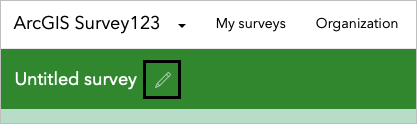

Lab No 3: Mapping Meaningful Places in Your Community
Overview
In this lab, you will learn to identify and map meaningful places in your community using ArcGIS Survey123. This project involves designing a research study, collecting data through surveys, and analyzing the results to understand what places contribute to your community’s identity and resilience.
Learning Objectives
By the end of this lab, you will be able to: - Design a research project with clear objectives and methodology - Create digital surveys using ArcGIS Survey123 - Collect and analyze spatial data about community places - Visualize data patterns using heat maps and other analytical tools - Draw conclusions about community identity and important places
Estimated time of completion: 45 Minutes
Part 1: Design Your Project
Step 1: Formulate a Research Question
Before collecting any data, you need to establish a clear research question that will guide your entire project. Your research question should address: Why are you collecting data? What do you want to know?
Task: Write a research question to guide your project about important places in your community.
Examples: - What places in my community have social, economic, and political value and add to my community’s identity? - What places in my community contribute to its identity?
Scottish Context Examples: - What places in Edinburgh contribute most to the city’s cultural identity beyond the obvious tourist attractions? - How do community spaces in Glasgow neighborhoods support local resilience and social cohesion? - What locations in the Scottish Highlands are most valued by local residents for their cultural and economic importance?
Step 2: Plan Your Data Collection
Now that you have your research question, consider what kinds of data you need to collect. Think about the who, what, when, where, and why of your data collection.
Task: Write five sample questions that you can use to collect data to answer your research question.
Example Questions: - What is the name of this place? - Why is it important to you? - What activities do you do at this place? - How often do you visit here? - Who is there with you? - How many people are typically there with you?
Step 3: Consider Data Types
Different types of questions collect different types of data (numbers, text, dates, rating scales, images). Planning your data types in advance will make analysis easier later.
Task: Write 5-8 survey questions, keeping in mind your research question and the types of data you want to collect about each location.
Sample Survey Questions Table:
| Question | Options | Data Type |
|---|---|---|
| What is the name of this place? | Text | |
| Where is this place? | Map | |
| What kind of place is this? | School, Neighborhood, Park or open space, Library, Market, Shopping center, Religious space, Community center, Memorial or historic site, Restaurant, Performing Arts space, Other community space | Single select |
| How do you interact with this space? | To spend time with family, To spend time with friends, To exercise, For recreation, To shop, To learn, To worship, Other | Multiple select |
| How important is this place to you? | Rating | |
| How many times per week do you visit this place? | Number | |
| What kinds of challenges might this place face? | Climate threats and adaptability, Funding challenges, Land use change and development, None | Multiple select |
| Upload a photo of this location | Image |
Scottish Context Examples: - For “What kind of place is this?” you might add: Village hall, Distillery, Castle/Historic site, Farmers market, Pub, Community sports club, Gaelic cultural center - For challenges: “Highland depopulation,” “Tourism pressure,” “Language preservation needs,” “Weather-related access issues”
Step 4: Determine Sample Size
Consider how many responses you need to answer your research question effectively. Also consider potential data bias - does your sample represent the population you’re trying to understand?
Task: - Decide how many data points you need to collect and from how many different people - Set a goal as a class for how many data points you need to collect and how many people you should survey
Important Note: Be aware of data bias. If you only survey your classmates, your data will tell you what’s important to people your age, but may not represent the broader community.
Part 2: Create the Survey
Step 5: Set Up ArcGIS Survey123
Go to the ArcGIS Survey123 website and sign in with your ArcGIS Online account
Click New survey
For Blank survey, click Get started
Step 6: Configure Survey Information
On the ribbon, click the Edit survey info button

In the Edit survey info window, for Name, delete “Untitled survey” and type “Places of importance”
Click OK
Step 7: Add Survey Title and Description
Click Survey title not set
In the Survey header pane, delete the existing text and type “Places of importance in our community”
In the survey builder pane, click Description content for the survey
In the Survey description pane, delete the existing text and type:
What places in the community have social, economic, or political value and add to my community's resilience?
Step 8: Add Questions to the Survey
Add Text Question
In the Survey description pane, click the Add tab
Find the Singleline text question and drag it into the survey pane
On the Edit tab, for Label, type “What is the name of this place?”
For Validation, check the box for “This is a required question”
Add Map Question
In the Add pane, find the Map question type and drag it into the survey pane below the first question
For Label, type “Where is this place?”
For Hint, type: “Keep in mind with maps that some information is personal: you probably shouldn’t share your home’s location nor other personal locations. But you can safely share locations like your city or a major intersection.”
For Drawing tools, make sure Point is selected
For Map and extent, type the address of your school and press Enter, or zoom and pan until you find your campus
For Default location, choose “Center of the map extent specified above”
For Validation, check the box for “This is a required question”
Add Additional Questions
- Click the Add tab and add the rest of the questions you’ve formulated
- Test various question types to see what will get you the best survey results
- When you’re finished adding your questions, at the bottom of the design pane, click Save
Step 9: Publish Your Survey
- Review your work to ensure everything’s in the correct order, spelled correctly, and properly configured
- Click Publish two times
- The survey may take a few minutes to publish
Part 3: Collect Data
Step 10: Share Your Survey
In the Survey123 site, click the Collaborate tab
For “Who can submit to this survey,” check the box Members of my organization (University of St Andrews)
Click Save
For “Share this survey,” copy and share the link, or click “Show the QR code” to allow your class to open the survey

Step 11: Gather Survey Responses
- Have your classmates fill out and submit the survey. Ask your classmates to fill up your survey, you will need at least 20 replies to get enough data to analyse in the next part.
- Monitor the number of responses to ensure you meet your data collection goal
- Remember to consider data quality and potential bias as responses come in
Part 4: Analyze Data
Step 12: Review Your Data
Click the Data tab
The Data tab shows two main components—a map of the data points you’ve collected, and an attribute table. An attribute table is a table that organizes all the data about each point.
Examine both the map view and the attribute table
Click a point on the map to see the corresponding record highlighted in the attribute table
Step 13: Create a Heat Map
On the Data ribbon, click Open in Map Viewer
On the Settings toolbar, click the Styles button
Under “Pick a style,” click Heat map, and click Done

Zoom in to your study area to examine the heat map patterns
Analysis Questions: - Does your heat map show that many students think the same places are important? - Are there many different places that are important to students? - What patterns do you notice in the spatial distribution of important places?
Scottish Context Analysis: - Are important places clustered in city centers or distributed across neighborhoods? - Do rural and urban areas show different patterns of meaningful places? - Are there differences between places important to different age groups or communities?
Step 14: Analyze Survey Responses
Close the Map Viewer window
On the ribbon, click the Analyze tab
Review how each question was answered
Look for patterns, similarities, and differences in responses
Analysis Questions: - What similarities do you notice about your class’s answers? - What differences stand out? - Are there any surprising results? - Do the results vary by demographic characteristics?
Part 5: Draw Conclusions
Step 15: Evaluate Your Research Question
Return to your original research question and consider whether your data adequately answers it.
Questions to Consider: - Does your data answer your research question? - What places in your community appear to have the most social, economic, or political value? - What contributes to your community’s identity based on your findings? - Are there gaps in your data that need to be addressed?
Step 16: Consider Data Limitations
Reflect on potential limitations in your data: - Who was surveyed and who was not? - What biases might exist in your sample? - What additional data might strengthen your conclusions?
Scottish Context Considerations: - Does your data represent different Scottish communities (urban/rural, Highland/Lowland)? - Are there cultural or linguistic factors that might affect responses? - How might seasonal variations affect the importance of certain places?
Part 6: Submit Your Work
Step 17: Document Your Results
Instead of sharing your map online, you will submit a comprehensive screenshot for assessment.
Task: Take a screenshot that includes your entire computer screen showing: 1. Your completed survey results and analysis 2. The date and time display from your computer 3. Your ArcGIS Survey123 interface with your data
Requirements for Screenshot: - Must show the complete screen (not just the browser window) - Date and time must be clearly visible in the system tray/menu bar - Your survey data and analysis should be displayed - Image should be clear and readable
File Naming: Save your screenshot as “YourLastName_MeaningfulPlaces_[Date].png”
Step 18: Written Reflection
Along with your screenshot, provide a brief written reflection (300-500 words) addressing: - Your research question and methodology - Key findings from your data analysis - Limitations of your study - How your findings relate to community identity and resilience - Specific examples relevant to Scottish communities if applicable
Conclusion
This lab demonstrates the complete process of spatial data collection and analysis, from research design through data interpretation. The skills you’ve learned can be applied to any research question involving spatial data and community analysis. Consider how similar methodologies might be used to study other aspects of community life, cultural heritage, or environmental issues in Scottish contexts.